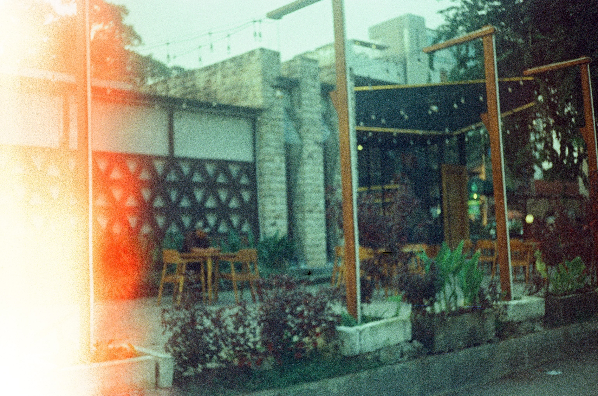
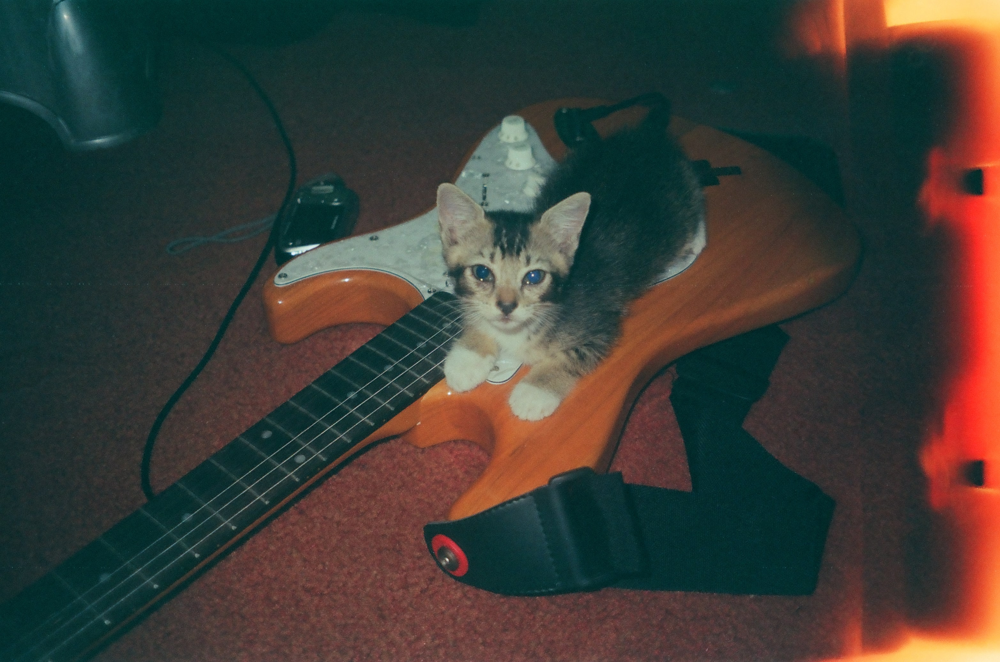

"The Magic of Imperfection": Saat Hasil Foto Analog Terbakar
Ketidaksempurnaan yang Menjadi Seni
Dalam dunia fotografi analog, tidak semua hasil yang kita dapatkan selalu sempurna. Kadang-kadang, film yang kita gunakan bisa terkena cahaya berlebih, atau proses pengembangannya mengalami kesalahan, menghasilkan efek terbakar pada foto. Meskipun ini terlihat seperti kecelakaan, hasil yang terbakar ini justru memiliki keindahan tersendiri dan sering kali dihargai sebagai bentuk seni yang unik.
Mengapa Foto Terbakar Bisa Menjadi Menarik?
Efek terbakar pada foto analog terjadi ketika film terkena light leak atau bocoran cahaya yang tidak disengaja. Biasanya, hal ini disebabkan oleh cahaya yang masuk ke dalam kamera melalui celah atau kerusakan pada segel kamera yang melindungi film. Selain itu, bisa juga disebabkan oleh kesalahan saat menggulung atau memuat film, atau bahkan karena kesalahan dalam proses pengembangan di laboratorium.
Hasil akhirnya adalah area pada foto yang terlihat memudar, terbakar, atau bahkan menunjukkan garis cahaya berwarna oranye, merah, atau kuning. Pada beberapa foto, efek terbakar ini bisa menambah dimensi estetika yang tidak terduga, memberikan kesan nostalgia, misteri, atau dramatis.
Apakah Ini Selalu Kesalahan?
Meskipun efek terbakar sering kali tidak disengaja, banyak fotografer analog justru memanfaatkan fenomena ini sebagai elemen artistik yang disengaja. Beberapa bahkan memodifikasi kameranya secara khusus untuk menciptakan light leaks atau bahkan membakar film dengan sengaja untuk menciptakan efek yang lebih dramatis. Di era digital, ketidaksempurnaan ini justru menjadi bentuk perlawanan terhadap kesempurnaan teknologi modern.
